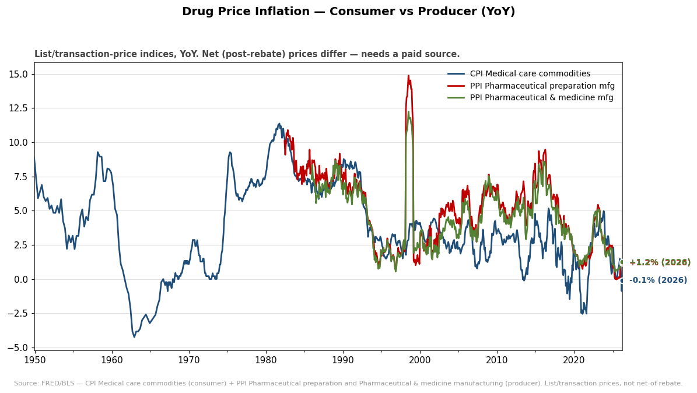

Drug Price Inflation Benchmarks
Consumer vs producer drug-price inflation from FRED/BLS. CPI prescription-drug
sub-item isn't on FRED (medical-care-commodities used as the consumer proxy); these are
list/transaction prices — net (post-rebate) prices need a paid source. AARP Rx Price Watch /
46brooklyn are non-FRED follow-ups. · ↑ workspace hub · 1 chart
Drug Price Inflation — Consumer vs Producer (YoY)
Consumer drug+supply prices (CPI) vs producer pharma prices (PPI), year-over-year. Latest: CPI commodities -0.1%, PPI pharma prep +1.2%.
